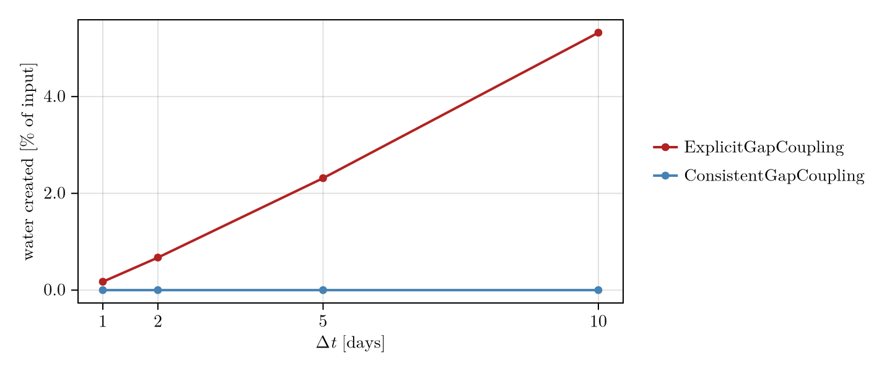

Gap coupling
Each step has two parts: the head equation is solved for the hydraulic head h, then the gap height b is moved by the gap scheme. The head equation contains the storage term db/dt, which it cannot read from the gap update that has not run yet, so it has to assume how far the gap moves in this step. gap_coupling chooses that assumption:
ConsistentGapCoupling()(default): the head equation assumes the change the gap scheme will make.ExplicitGapCoupling(): the head equation assumesdb = dt * rate(N, b_old), the gap rate at the new effective pressureNtimes the old gapb_old, as Shakti (Sommers et al., 2018) does.
rate(N, b) is the rate at which the gap changes: opening by melt of the walls and by sliding over bed bumps, minus creep closure,
\[\mathrm{rate}(N, b) = \frac{\dot m}{\rho_i} + \beta(b)\,|\mathbf{u}_b| - A\,|N|^{n-1} N\, l_c(b) ,\]
with $\beta$ the bump-height factor and $l_c$ the creep length, both functions of the gap. ExplicitGapCoupling evaluates b at the start of the step (b_old) but $N$ at the end of it. That does not need $N^{n+1}$ to be known beforehand, because $N = p_o - \rho_w g (h - z_b)$ is a function of the head, and the head $h^{n+1}$ is exactly what the head equation solves for. The creep term $A |N|^{n-1} N\, l_c(b_\mathrm{old})$ is therefore written into the row as a function of the unknown $h$. Each Picard iterate recomputes $N$ from the current $h$ and linearizes the term about it (this puts $n \rho_w g A |N|^{n-1} l_c$ on the diagonal), so that at convergence it is evaluated at $N^{n+1}$. Only the gap is lagged. The melt and sliding terms are likewise recomputed at the iterate, since $\dot m$ depends on the flux and the basal drag, which depend on $h$.
When the two disagree, the water the head equation put into or took out of the gap is not the water the gap update stores. The difference is water created or lost from nothing. This page shows when that happens and how large it is. A closed water budget means that, per step, the change of stored water equals the input minus the water that left through the outlets, to solver tolerance.
This page runs when the docs are built.
using Shakti
using CairoMakieSetup
The ice-sheet margin glacier of the Tutorial, with the default sheet.
nx, ny = 80, 20
grid = Grid(nx, ny, 20000.0, 5000.0)
mask = fill(GROUNDED, nx, ny)
mask[1, :] .= LAND
mask[end, :] .= OTHER_BASIN
mask[:, [1, end]] .= OTHER_BASIN
zb = zeros(nx, ny)
zs = [6 * (sqrt(x + 5000.0) - sqrt(5000.0)) + 1 for x in grid.x, y in grid.y]
A_visc = 5e-25
p = ModelParameters()
sl = RegularizedCoulombSlidingLaw(0.25);Why the two couplings differ
Creep closes the gap at the rate A N^3 b (Glen's law, n = 3). Over a step of length dt the head equation with ExplicitGapCoupling assumes the gap closes by dt A N^3 b_old. The fully implicit gap scheme, the default, closes it by dt A N^3 b_old / (1 + dt A N^3) instead (for the creep term alone). The two agree while dt A N^3 is small, and the explicit assumption overshoots once it exceeds 1: with dt A N^3 = 4 it removes four times the gap, the gap scheme removes four fifths of it, and the difference is created water. Where the ice is thick and N is large, dt A N^3 is largest.
Run
The same year of simulation, once with each coupling, for time steps of 1, 2, 5 and 10 days. water_created(sim) returns the budget: total_created is the water created over all steps (net) and total_input is the water supplied over all steps, both in $m^3$.
function run_year(gap_coupling, dt)
nsteps = round(Int, 365 * 86400 / dt)
state = State(grid)
set_initial_conditions!(state, grid, p, sl, mask, fill(A_visc, nx, ny), zb, zs, fill(0.01, nx, ny),
fill(0.05, nx, ny), fill(1e-6, nx + 1, ny), zeros(nx, ny + 1),
fill(1.0 / (365 * 86400.0), nx, ny), zeros(nx + 1, ny), zeros(nx, ny + 1))
ls = LUDirectSolver(grid)
max_iter, tol = 200, 1e-6 # Picard iterations per step and tolerance
ps = PicardSolver(max_iter, tol, ls, grid)
sim = Simulation(grid, state, nsteps, floattype(dt), p, ConstantMeltInput(), sl; ps = ps, gap_coupling = gap_coupling)
run!(sim)
wb = water_created(sim)
N = Array(state.N)[Array(state.mask) .== GROUNDED]
return (dt_days = dt / 86400, coupling = nameof(typeof(gap_coupling)), converged = sim.hs.ps.converged,
max_dt_A_N3 = dt * A_visc * maximum(abs.(N))^3,
created_percent_of_input = 100 * wb.total_created / wb.total_input)
end
dts = [1.0, 2.0, 5.0, 10.0] .* 86400
consistent = [run_year(ConsistentGapCoupling(), dt) for dt in dts]
explicit = [run_year(ExplicitGapCoupling(), dt) for dt in dts]
vcat(consistent, explicit)8-element Vector{@NamedTuple{dt_days::Float64, coupling::Symbol, converged::Bool, max_dt_A_N3::Float64, created_percent_of_input::Float64}}:
(dt_days = 1.0, coupling = :ConsistentGapCoupling, converged = 1, max_dt_A_N3 = 2.0053789953405503, created_percent_of_input = -1.1545217382109055e-16)
(dt_days = 2.0, coupling = :ConsistentGapCoupling, converged = 1, max_dt_A_N3 = 4.010757994421033, created_percent_of_input = -7.986999249409458e-17)
(dt_days = 5.0, coupling = :ConsistentGapCoupling, converged = 1, max_dt_A_N3 = 10.02689501406754, created_percent_of_input = 1.0247726434198578e-16)
(dt_days = 10.0, coupling = :ConsistentGapCoupling, converged = 1, max_dt_A_N3 = 20.053790121528042, created_percent_of_input = -2.3264949108026273e-17)
(dt_days = 1.0, coupling = :ExplicitGapCoupling, converged = 1, max_dt_A_N3 = 2.005378993469653, created_percent_of_input = 0.17317490582474765)
(dt_days = 2.0, coupling = :ExplicitGapCoupling, converged = 1, max_dt_A_N3 = 4.010757986939322, created_percent_of_input = 0.6728958558022108)
(dt_days = 5.0, coupling = :ExplicitGapCoupling, converged = 1, max_dt_A_N3 = 10.026895511732409, created_percent_of_input = 2.3139683503427158)
(dt_days = 10.0, coupling = :ExplicitGapCoupling, converged = 1, max_dt_A_N3 = 20.050913752605666, created_percent_of_input = 5.321330797391383)Result
With ConsistentGapCoupling the created water is zero to rounding at every dt. With ExplicitGapCoupling it grows with dt A N^3: the budget does not close, and the water created is a fraction of the input that is not small at large steps (5 % at 10 days). The extra water shows up in the budget, so check water_created(sim) when you use it.
fig = Figure(size = (720, 300))
ax = Axis(fig[1, 1]; xlabel = L"\Delta t\ [\mathrm{days}]", ylabel = L"\mathrm{water\ created\ [\%\ of\ input]}",
xticks = [1, 2, 5, 10], xtickformat = vs -> [L"%$(round(Int, v))" for v in vs],
ytickformat = vs -> [L"%$(round(v, digits = 1))" for v in vs])
scatterlines!(ax, [r.dt_days for r in explicit], [r.created_percent_of_input for r in explicit];
color = :firebrick, linewidth = 2, label = L"\mathrm{ExplicitGapCoupling}")
scatterlines!(ax, [r.dt_days for r in consistent], [r.created_percent_of_input for r in consistent];
color = :steelblue, linewidth = 2, label = L"\mathrm{ConsistentGapCoupling}")
Legend(fig[1, 2], ax; framevisible = false)
fig
When to use which
- Use the default,
ConsistentGapCoupling(). It conserves water at anydtand, atN < 0on a sheet without uplift, letsNrecover where the explicit coupling can let the gap run away. - Use
ExplicitGapCoupling()only to reproduce results of Shakti or ISSM, which assume the explicit change.ShaktiSheet(original = true)sets it (see the Tutorial).